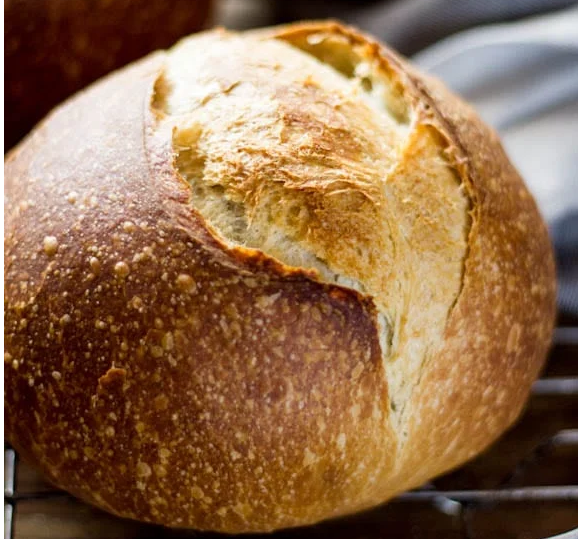

Sourdough

Description
Sourdough can be defined as an intermediate product containing a flour/water mixture that has been fermented by a combination of bacteria, usually heterofermentative strains of lactic acid bacteria and yeast (DeVuyst and Neysens, 2005), resulting in an end product with a sour taste.
Ingredients
- 150g bubbly, active sourdough starter
- 250g/ 8.80 oz warm water, preferably filtered*
- 25g/ .90 oz olive oil
- 500g/ 17.65 oz bread flour (not all purpose flour)
- 10g/ .4 oz fine sea salt
- fine ground cornmeal, for dusting
Steps
- Mix the Dough: This is simply a matter of combining water, sourdough starter, salt and flour in bowl, and stirring to form a sticky dough ball
- Bulk Fermentation: This is just a fancy name for the first rise. During the first two hours of the bulk fermentation, you’ll perform a series of stretches and folds, which will give the dough strength and elasticity.
- Shape + Bench Rest: This step ends the bulk fermentation. You’ll shape the dough, let it rest, then shape it once more.
- Proofing the Dough: In this recipe, you’ll cold proof the dough in the fridge, ideally for 24 to 48 hours, though you can get away with a shorter proof.
- Scoring + Baking the Dough: After the dough has proofed, you’ll turn it out onto a piece of parchment paper, score it; then transfer it to a preheated baking vessel.